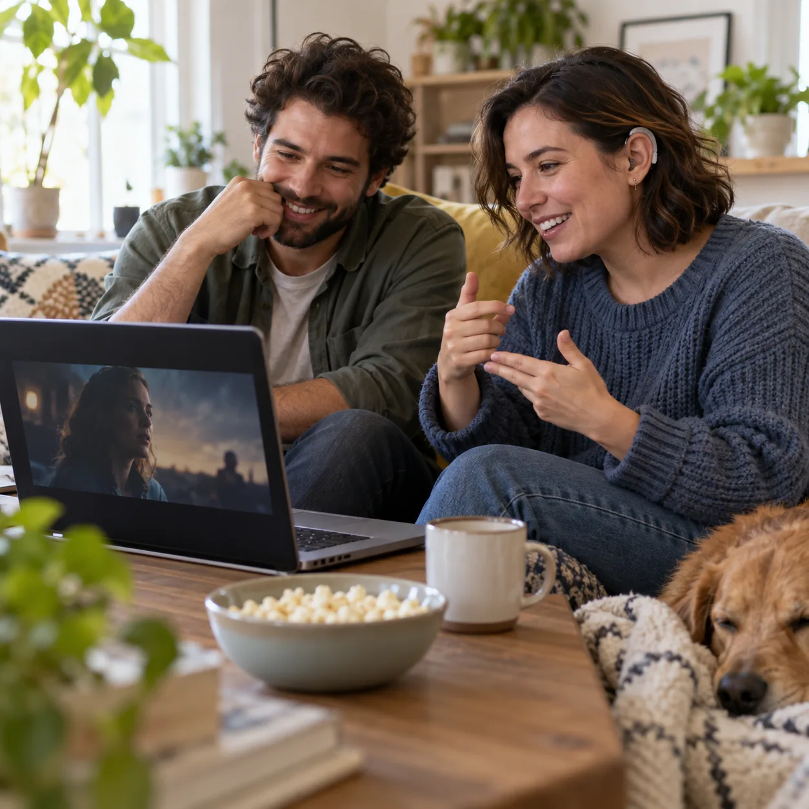
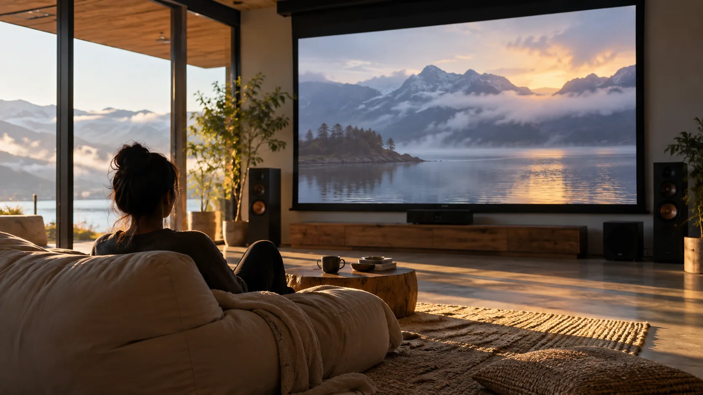
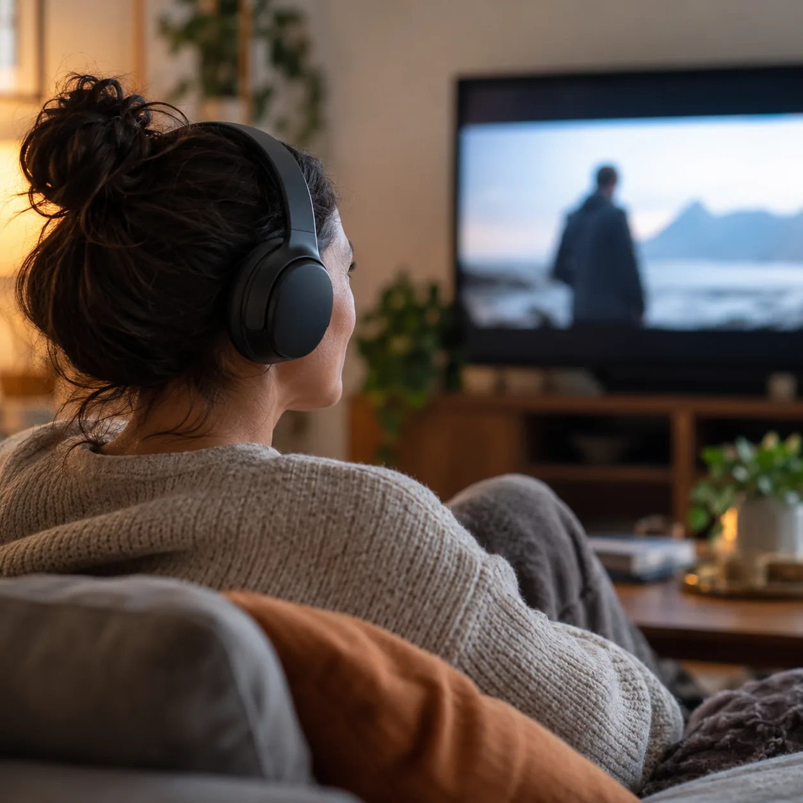
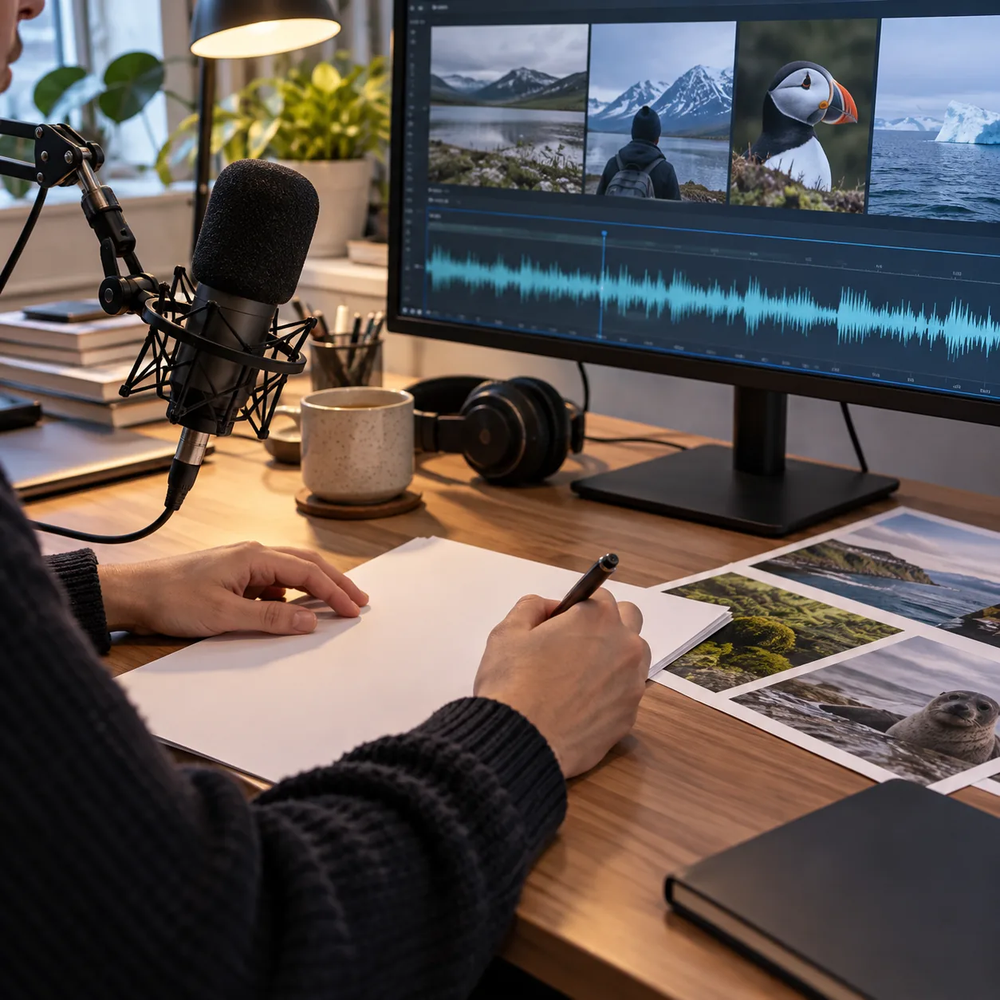
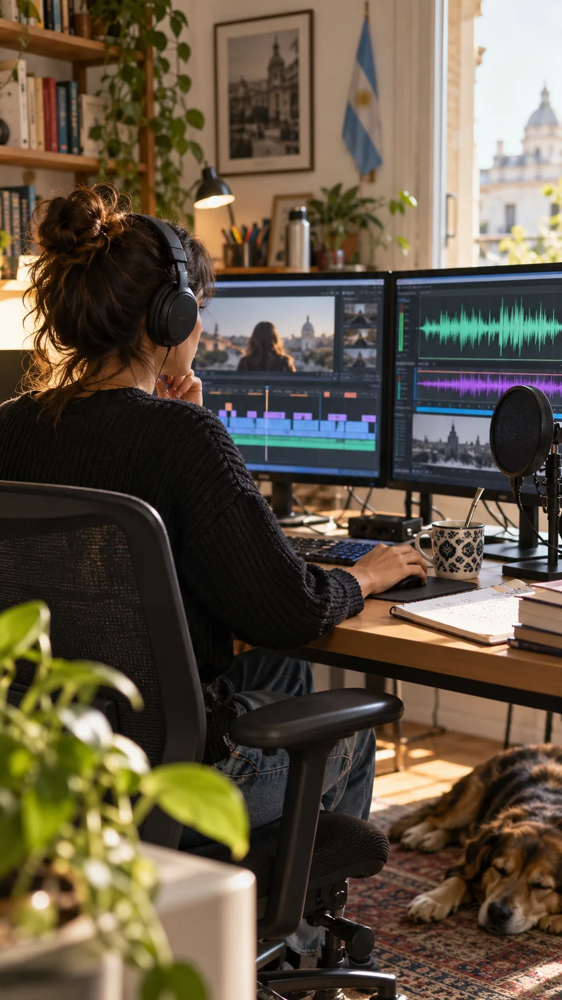

Subtitulado para personas sordas (SDH)
Subtítulos que dicen quién habla, qué suena y cómo suena: efectos, música y tono, sincronizados y fáciles de leer.
Ver la muestra de SDHTraducción audiovisual accesible
Hago visible lo que suena y audible lo que se ve, para personas sordas, hipoacúsicas y ciegas. Y subtitulo del inglés al español.


Subtítulos que dicen quién habla, qué suena y cómo suena: efectos, música y tono, sincronizados y fáciles de leer.
Ver la muestra de SDHUn guion que narra lo que pasa en pantalla en los silencios del diálogo, para que una persona ciega siga la historia completa.
Escuchar la muestraTraducción para subtítulos con tiempos y velocidad de lectura cuidados: se condensa sin perder sentido ni tono.
Comparar original y traducciónTambién traducciones generales entre inglés y español: guiones, materiales educativos y documentos.
Consultar por una traducciónFragmentos de ejemplo con sus subtítulos, su audiodescripción y el guion completo, para recorrer también con teclado o lector de pantalla.

Quién habla, qué suena y cómo suena. Tocá una línea para ir a ese momento.

Tu navegador no tiene voz sintética: la audiodescripción se lee en pantalla y en el guion.
Lo que se ve, contado en los silencios. Se escucha con la voz del navegador y se lee acá.
Cada frase se condensa para leerse a tiempo, sin perder el sentido.

Sobre mí
Soy Carolina Lucero, técnica superior en Traductorado de Inglés y diplomada en Traducción Audiovisual por la UTN. Me especialicé en audiodescripción, accesibilidad y derechos humanos, con formación en el país y en el exterior.
Creé Lucero Audiodescripciones y Subtitulado para que más películas, series y clases se puedan ver, escuchar y entender sin barreras. Cada línea pasa por la misma pregunta: ¿le llega a quien no oye o no ve?
Cursos
Un curso teórico-práctico para aprender a subtitular para personas sordas e hipoacúsicas: convenciones, información sonora, marco legal y herramientas, con devolución de trabajos finales.
Es el módulo 2 del Taller de accesibilidad audiovisual de la AATI (Asociación Argentina de Traductores e Intérpretes), pensado para profesionales y estudiantes de traducción.
Referencias
Libre Audesc Group · España
Guionista y editora de proyectos de accesibilidad audiovisual.
Global3
Audiodescriptora en producciones internacionales de entretenimiento: series de Paramount y títulos de anime.
AATI
Docente del Taller de subtitulado accesible (SDH/SPS).
Congresos y festivales de cine
Ponente sobre accesibilidad audiovisual.
Provincia de Buenos Aires
Colabora en iniciativas y políticas públicas de accesibilidad cultural y audiovisual.
Mandame el tipo de material, la duración y el plazo, y te respondo con presupuesto y fechas.
El SDH suma la información sonora que una persona sorda o hipoacúsica no recibe: quién habla, los efectos, la música y el tono con que se dice cada cosa.
Es una pista de audio que narra la información visual importante en los silencios del diálogo, sin tapar sonidos relevantes ni anticipar lo que va a pasar.
Películas, cortos, series, documentales, clases y videos institucionales o para redes. Si tenés otro formato, consultame.
Los subtítulos, en el formato que pida tu plataforma o reproductor (SRT, VTT y otros). La audiodescripción, como guion con tiempos listo para locutar.
Escribime por WhatsApp con el tipo de material, la duración y el plazo que tenés, y te respondo con presupuesto y fechas.